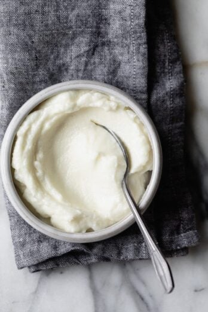

Lebanese Garlic Sauce

Description:
This sauce is popular in Lebanese restaurants and usually served with chicken.
Ingredients:
- 1 cup of peeled garlic
- 4 cups of vegetable oil
- Half a cup of lemon juice but you can decrease according to your taste preference
- Add salt according to your taste preference.
Steps:
- Place the peeled garlic and the salt in the food processor and blend until it's well minced
- Run the oil very slowly in a thin stream and small batches at a time. When you first introduce the oil, start with only one tablespoon of oil.
- Once it becomes airy and fluffy, it's your cue to continue making the garlic sauce by alternating between pouring in the oil and pouring in the lemon juice.
- To let the garlic set, cover it with a paper towel and store in the fridge, and let the flavors set in overnight before enjoying it.